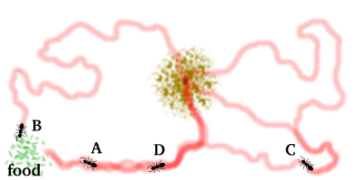

Francisco José Díaz Villarreal
Software Engineer | Full Stack Developer | Spec Driven Development | Project Lead | Data & Game Specialist
About Me
Software Engineer with PhD in Applied Sciences and strong experience in spec driven development, full stack development, backend systems, database architecture and game development with Unity (chess-based systems).
Technical Stack
- Languages: Python, Java, C#, C++, C, JavaScript, TypeScript, Apex, PHP
- Frontend: React, Vue, HTML5, CSS3
- Backend: Node.js, Spring Boot, .NET
- Databases: MySQL, SQL Server, MongoDB
- Game Development: Unity, C#
- AI / ML: Python, TensorFlow
Projects
📊 Data Analysis Project – Police Violence in Buenos Aires
Date: 12-Dec-2025 (Completed)
Role: Data Development Specialist / Spec Driven Development
Technologies:
Python | Pandas | NumPy | Google Colab | Data Visualization | EDA | Statistical Analysis
Description:
Data analysis project focused on exploring and understanding patterns related to police violence
incidents in Buenos Aires. The project includes data cleaning, preprocessing, exploratory data analysis
(EDA), and visualization to extract meaningful insights from real-world datasets.
Key Features:
- Data cleaning and preprocessing using Python (Pandas)
- Handling missing and inconsistent data
- Exploratory Data Analysis (EDA)
- Statistical analysis of incidents
- Data visualization to identify patterns and trends
- Interpretation of results for real-world insights
Visualizations:
Cases by Neighborhood

Police Abuse vs Education Level

Geographic Distribution (CABA Map)

Distribution of Cases

Links:
🛒 Full Stack Web Application – Shopping Cart
Date:1-Dec-2025 (Completed)
Role: Full Stack Developer / Chess-Based Systems
Technologies:
React.js | Node.js | MockAPI | Vite | JSON | REST API | JavaScript
Description:
Full stack web application developed for the sale and distribution of Masterdrez. The system implements a complete shopping cart with frontend and backend integration, using a RESTful API architecture and database management.
Key Features:
- Responsive frontend developed with React
- Backend API built with Node.js
- RESTful architecture for client-server communication
- Database integration with MockAPI
- Shopping cart functionality (add, remove, update products)
- Product management and data persistence

Store Interface (Product Catalog)

Shopping Cart System
Links:
♟️ Masterdrez – Multiplayer Chess Engine
Date:15-Dec-2024 | Present (In Progress)
Role: Game Development Specialist / Spec Driven Development / Chess-Based Systems
Technologies:
React.js | Chessground.js | Node.js | JavaScript | TypeScript
Description:
Four-player chess engine developed in Unity implementing custom movement logic, attack detection, and rule validation for a complex multiplayer environment. The project focuses on building a scalable and modular game architecture with advanced game logic.
Key Features:
- Custom chess engine for four-player gameplay
- Advanced movement validation system
- Check and attack detection algorithms
- Castling implementation with rule validation
- Turn-based multiplayer logic
- Object-oriented design and modular architecture


Links:
- Masterdrez Website
- Source Code: Private
🚀 CRUD Spring Boot API (CAC)
Date: 27-Feb-2020 | Present (In Progress)
Role: Backend Java Developer / Spec Driven Development
Technologies:
Java 17 | Spring Boot | Spring MVC | Spring Data JPA | Hibernate | MySQL | Maven
Description:
Backend CRUD application developed using Spring Boot, focused on implementing a RESTful API
with a modern layered architecture and database persistence.
The project demonstrates real-world backend development practices, including API design,
service abstraction, and data management using JPA and Hibernate. It is part of a continuous
learning process and remains under active development.
Key Features:
- RESTful API endpoints
- Full CRUD operations (Create, Read, Update, Delete)
- Layered architecture (Controller, Service, Repository)
- Database integration with JPA/Hibernate
- Clean and scalable backend structure
- Separation of concerns
Architecture:
- Controller Layer: Handles HTTP requests via REST endpoints
- Service Layer: Implements business logic
- Repository Layer: Data access using Spring Data JPA
- Database: MySQL for persistent storage
Links:
🧾 CRUD Web Application – Java EE
Date: 15-Jul-2022 (Completed)
Role: Full Stack Java Developer
Technologies:
Java 7 | Java EE | Servlets | JSP | JSTL | JDBC | MySQL | HTML | CSS | JavaScript | Bootstrap | Maven
Description:
Full Stack CRUD web application developed using a traditional Java EE architecture.
The system leverages Servlets for request handling and JSP for dynamic content rendering,
with JDBC-based integration to a MySQL database for persistent data management.
This project demonstrates core backend development principles, including manual request-response
handling, database connectivity, and structured application flow following an MVC-inspired design.
Key Features:
- Full CRUD operations (Create, Read, Update, Delete)
- Server-side rendering using JSP
- Form handling with Java Servlets
- Direct database interaction via JDBC
- MySQL integration for persistent storage
- MVC-inspired architecture
- Structured backend logic and data flow
Architecture:
- Controller Layer: Servlets managing HTTP requests and responses
- View Layer: JSP + JSTL for dynamic UI rendering
- Model Layer: Java classes representing entities
- Data Access Layer: JDBC connection to MySQL
Links:
☕ Java Fundamentals Bootcamp
Date: 18-Nov-2020 (Completado)
Role: Java Developer / Self-Directed Learning
Technologies:
Java | JDK | CLI | IntelliJ | Eclipse | VS Code
Description:
Structured, hands-on Java course designed to build strong programming foundations through theory,
practical exercises, and mini projects.
The bootcamp follows a progressive learning path covering core programming concepts, control flow,
data structures, and object-oriented programming, preparing for backend development with modern
frameworks such as Spring Boot.
Key Features:
- Step-by-step structured learning path
- Hands-on exercises with practical solutions
- Strong focus on programming logic and problem solving
- Object-Oriented Programming (OOP) fundamentals
- Mini projects including console-based applications
- Clean and structured coding practices
Topics Covered:
- Phase 1: Variables, Data Types, Input/Output
- Phase 2: Conditionals and Loops
- Phase 3: Methods and Arrays
- Phase 4: Classes, Objects, Inheritance, Polymorphism
- Phase 5: Exception Handling
- Phase 6: Console-based CRUD and menu-driven systems
Links:
🐜 Ant Colony Optimization – Research Project
Date:17-Nov-2020 (Completed)
Role: Algorithm Designer / Software Engineer / AI - Optimization Developer
Technologies:
Java | Optimization Algorithms | Multi-Agent Systems | Graph Theory | ACO | Eclipse IDE
Description:
Implementation of Ant Colony Optimization (ACO) algorithm for a Serious Emerging Games engine.
This project applies swarm intelligence and multi-agent optimization techniques to compute
optimal paths using pheromone-based communication inspired by real ant colonies.
Ant Colony Optimization is a probabilistic technique for solving computational problems which can be reduced to finding good paths through graphs. Artificial ants simulate pheromone-based communication to converge toward optimal solutions.
Ant Colony Optimization Model:

Artificial ants explore the environment and deposit pheromones. Over time, paths with higher pheromone concentration become preferred solutions, allowing the algorithm to converge toward optimal routes.
Classic ACO Algorithm:
Initialize parameters
Initialize pheromone trails
Create ants
while Stopping criteria not reached:
Construct solutions
Update pheromones
Apply daemon actions
end
Key Features:
- Ant Colony Optimization implementation
- Graph-based path optimization
- Multi-agent simulation
- Pheromone update mechanism
- Heuristic transition rules
- Daemon actions optimization
- Serious games engine integration
Architecture:
- Aco — Main optimization algorithm
- Ant — Agent behavior
- Environment — Graph search space
- Parameters — Algorithm configuration
- Program — Execution entry point
Links:
- GitHub Repository (Eclipse IDE)
- Article Published
- IEEE Published
Education
- 2024: PhD Applied Sciences - ULA
- 2010: MSc Applied Informatics - ISJPAE
- 2025: Diploma in Initialization in Programming and Data Analysis (Python) - UBA
- 2004: Computer Engineering - UVM
- 2022: Professional Specialization in Video Game Programming (C#) - CFP
- 2021: Programmer Track (TypeScript and SQL) - CFP
Contact
- Email: villadifran@gmail.com
- Phone: +54 11 4025-7257
- Location: Parque Patricios, CABA, Argentina